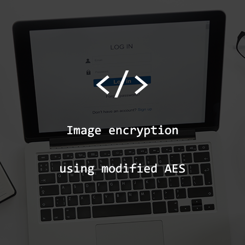

AES Algorithm S-box modification based on SAC value
Communication is something that cannot be separated from humans as social creatures. Images are the most commonly used visual communication in today's era. On the other hand, sending images via wireless networks is very vulnerable to piracy. AES, as one of the best cryptographic algorithms, can be applied as a solution. Even so, the AES algorithm still has weaknesses, which are weak against linear attacks and differential cryptanalysis. One solution to overcome the weaknesses of the AES algorithm is to use a stronger S-box. One of the methods to measure the strength of an S-box is the Strict Avalanche Criterion (SAC).
The algorithm is implemented in the form of a web-based application. The algorithm is compiled using the help of Visual Studio Code software and is completely written using the python programming language using the Flask library to create web views and to manipulate images in python using the PIL and Numpy libraries.